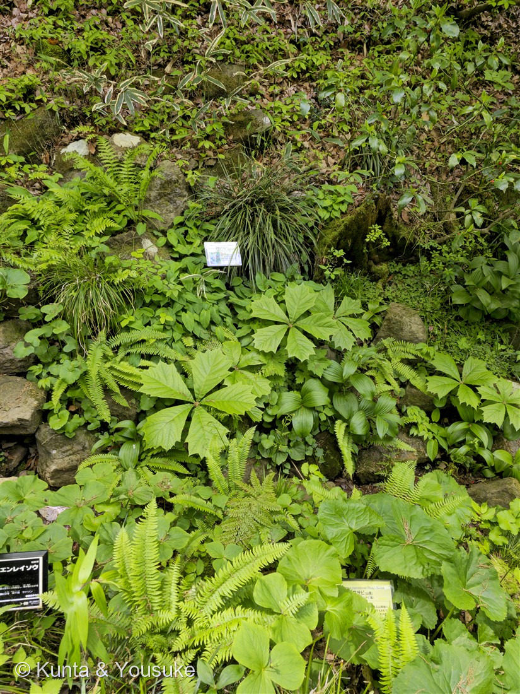
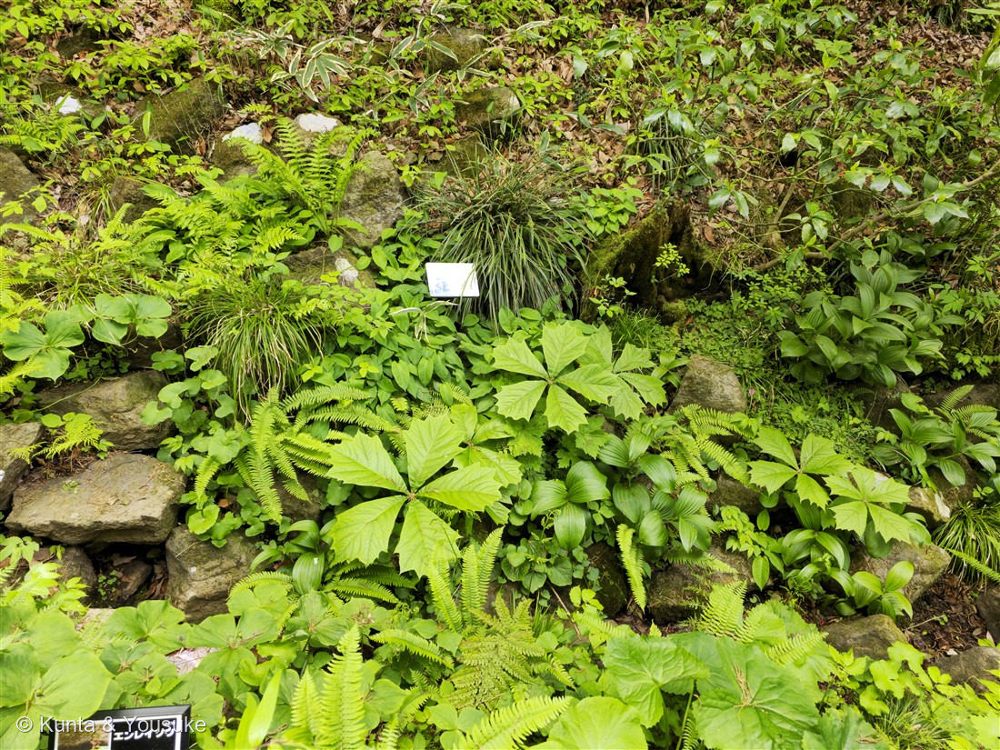
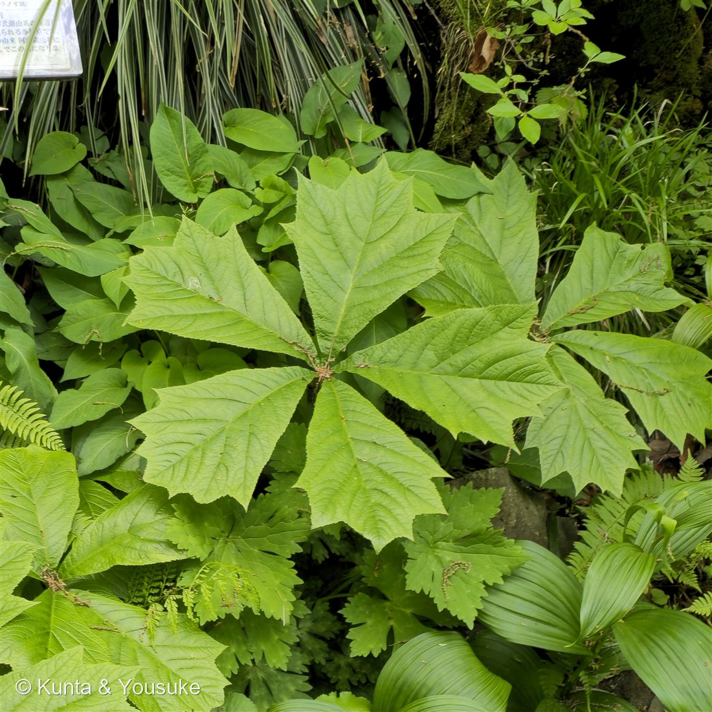

地図を読み込んでいるよ…
🔍 写真も地図も、押しているあいだ拡大して見られるよ（スマホは指を置いてすこし待ってね）。
🌍 の地図＝この子がもともと自生している場所を緑に。日本（北海道南西部〜本州）・朝鮮半島・中国北東部に自生。深山の、しめった林の中や谷ぞい。
⭐日本（北海道南西部〜本州）・朝鮮半島・中国の北東部に自生する在来の山野草だよ。深山の、しめって日かげの林の中や谷ぞいが好き。⚠四国・九州・沖縄は塗っていない——この子は北海道と本州にしかいないんだ。⭐おなじ日に同じ野草園で撮った149エンレイソウは九州まで広がっているのに、この子は本州で止まっている。となりで暮らしていても、故郷の広さはちがうんだね。
⚠ 地図は国（日本と中国だけ県・省）までしか塗れないから、ほんとうの分布より広く見えていることがあるよ。地図はだいたいの場所。正確なところは、上の文を見てね。
ヤグルマソウ（矢車草）
Rodgersia podophylla A.Gray
原産 · 日本（北海道南西部〜本州）・朝鮮半島・中国北東部／ 見どころ · ⭐鯉のぼりの矢車のような掌状複葉・提督の名前をもらった草・葉では科が決まらない話・図鑑初のユキノシタ科
ユキノシタ科 · Saxifragaceae（ヤグルマソウ属 Rodgersia・ユキノシタ目）── 図鑑で初めての科（68科目）
名前と学名の由来 ── 提督の名前と、鯉のぼりの矢車
- ⭐属名 Rodgersia（ロジャーシア）＝アメリカ海軍のジョン・ロジャース提督（John Rodgers, 1812〜1882）への献名。彼が指揮した北太平洋測量遠征（1852〜1856年）のあいだに、この草の標本が日本で採られた。名づけたのは、アメリカの植物学者エイサ・グレイ（A.Gray・1858年発表）。──海の男の名前が、日本の谷底の草につけられたんだ。
- 種小名 podophylla（ポドフィラ）＝ギリシャ語の podos（足）＋ phyllon（葉）＝「足のような葉」。
- ⭐和名ヤグルマソウ（矢車草）＝鯉のぼりの竿の先で、くるくる回る「矢車」に、5枚の小葉の並びが似ているから。──⭐名前が、そのまま写真①③のかたちだよ。
- ⚠⚠まぎらわしい名前：お花屋さんで青い花を「ヤグルマソウ」と呼ぶことがあるけれど、あれはヤグルマギク（Centaurea cyanus・キク科）で、別の植物。この子はユキノシタ科。名前は似ていても、科からしてちがう。
この植物のこと ── ユキノシタ科の、大きいほうの顔
- ユキノシタ科ヤグルマソウ属の多年草。⭐図鑑で初めての「ユキノシタ科」＝68科目だよ。深山の、しめって日かげの林の中や谷ぞいに、太い地下茎をのばして群れる。
- ⭐とにかく大きい。小葉1枚が長さ15〜30cm（大きいものは40cm）・幅10〜25cm。葉ぜんたいを広げると、人の顔よりずっと大きいんだ。
- 花は6〜7月。葉のずっと上に茎をのばして、20〜40cmの円すい形の花序に、小さな白い花をびっしりつける。
- ⭐⭐そして、その花には「花びらが無い」。白く見えているのは、花びらではなく萼片（5〜7枚）。おしべは10本ほど（8〜15本）、めしべの心皮は2つ。──⭐この「花弁が無い・萼が花びらに見える・心皮2つ」が、ユキノシタ科の体のつくりなんだ。実は長さ5mmほどの細い蒴果になる。
- 149 エンレイソウも「花びらが無い」子だったね。⭐同じ林で、まったく別の科の草が、それぞれ別の道すじで“花びらをやめた”。おもしろい偶然だよ。
同定について ── 葉で種は決まるけれど、科は決まらない
- ⭐決め手＝1つの点から放射状に出る掌状複葉・小葉は5枚（時に7枚）。5枚の別々の葉ではなくて、1枚の葉が5つに分かれているんだ。
- ⭐小葉のかたち＝倒卵形。根もとが細いくさび形で、いちばん広いのは先のほう。そして⭐先が浅く3〜5つに裂けて、あらい鋸歯。葉脈が深く彫り込まれて、表面がしわしわ。──写真③で、この「先の割れかた」がはっきり見えるよ。
- ⚠トチノキも掌状に5〜7枚だけど、あちらは木だし、小葉の先が裂けない。
- ⚠ヤブレガサ・モミジガサ（どちらもキク科）は、1枚の葉が深く裂けているだけで、複葉ではない。切れこみの根もとまでたどると、葉が1枚につながっている。
- ⚠⚠でも、ここまでで決まるのは「種」まで。⭐この葉を見ても、科までは届かない——ユキノシタ科と聞いて思いうかぶのは、岩にへばりつく小さなユキノシタやダイモンジソウで、この大きな葉とは似ても似つかないから。科の決め手は花のほうにある（花弁が無い・萼が白い・心皮2つ）。──だから花は宿題。6〜7月にもう一度、この子に会いに行こう。
⭐ 燻太さんの「どの科かわからない」について
この子の写真をくれたとき、燻太さんはこう言った。──「葉の形が独特すぎて、どの科に属するかわからない」。
⭐これ、見落としでも勘ちがいでもなくて、まっとうな戸惑いなんだ。 葉のかたちは、科を当てるための道しるべとしては、あんまり頼りにならない。同じ科の中で、岩の小さなユキノシタと、この大きなヤグルマソウが、平気で同居している。逆に、まったくちがう科どうしが、そっくりな葉をつけることもある（ヤブレガサはキク科なのに、こんな形だ）。
⭐科という区切りは、葉ではなく、花と実のつくりで引かれている。 花びらが何枚か、萼はどうか、おしべは何本か、めしべの部屋はいくつか——外からいちばん見えにくいところに、いちばん深い血すじが書いてある。だから燻太さんは「わからない」で正しかった。わかるはずのないものを、写真から当てにいかなかったんだから。
⭐そして図鑑には、この話とつながる子がもう一人いる。083 ギンバイソウだ。あの子はむかしの体系では「ユキノシタ科」に置かれていて、いまはアジサイ科にいる。⭐人間のほうも、この線をどこに引くか、ずっと迷ってきたんだ。燻太さんが迷ったのと、同じところで。
⭐ 野草園の、おなじ日の子たち
撮影は2025年5月5日、仙台市野草園。──147 サクラソウ・148 クマガイソウ・149 エンレイソウと、まったく同じ日、同じ場所。⭐しかも写真①の左下に写っている黒い名札には「エンレイソウ」と書いてある——⭐149の子は、このヤグルマソウのすぐ足もとにいたんだ。写真の右下のほうには「ワサビ（山葵）」の黄色い名札も見える。春の林床に、みんなぎゅうぎゅうで暮らしている。
参考：三河の植物観察「ヤグルマソウ」（在来種・北海道、本州、朝鮮、中国／葉は5(〜7)小葉の掌状複葉・小葉は倒卵形 長さ15〜30(〜40)cm×幅10〜25cm・先は3〜5裂・縁に鋸歯／花期6〜7月・頂生の円錐花序・花弁はなく白色の萼片5〜7個が花弁に見える・雄しべ通常10本・心皮2個／蒴果は長さ約5mmの狭卵形／和名は葉の形がこいのぼりの矢車に似ることから）／東邦大学薬学部付属薬用植物園「ヤグルマソウ」（北海道・本州の深山の湿り気のあるところの大型多年草／花序20〜40cm・花弁に見えるのは5個の萼片・雄しべ10・雌しべ2）／Missouri Botanical Garden Plant Finder “Rodgersia podophylla”（属名はジョン・ロジャース提督への献名／podophylla＝ギリシャ語 podos（足）＋phyllon（葉）／apetalous flowers＝花弁の無い花）／IPNI 793122-1（Rodgersia podophylla A.Gray, Mem. Amer. Acad. Arts n.s. 6: 389 (1858)・科名 Saxifragaceae）。⚠若芽を山菜として食べるという話は、読めた出典のどれにも書かれていなかったので、この図鑑には書いていないよ。